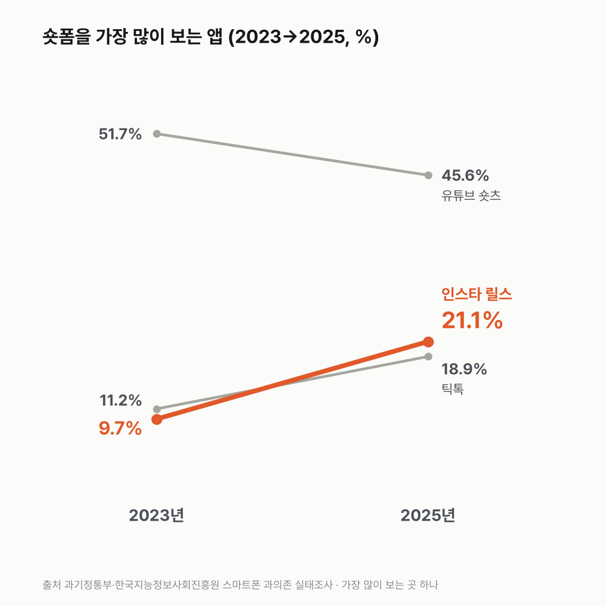
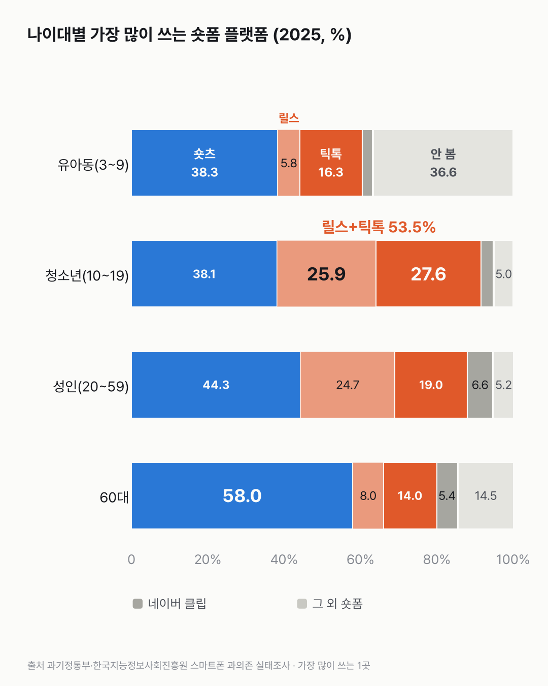

숏폼은 아직 숏츠가 1등, 릴스를 켜는 사람은 두 배가 넘었어요
동영상 보는 사람 열에 아홉이 숏폼을 봐요. 그중 첫손에 꼽는 앱은 숏츠 하나에서 릴스·틱톡 쪽으로 조금씩 나뉘었어요.

- 숏폼을 가장 많이 보는 곳으로 인스타 릴스를 고른 사람이 2023년 9.7%에서 2025년 21.1%가 됐어요.
- 1위는 유튜브 숏츠(45.6%)예요. 2023년엔 51.7%였어요.
- 청소년은 틱톡(27.6%)과 릴스(25.9%)를 고른 사람을 합치면 절반이 넘어요.
26.5%. 온라인 동영상은 보면서 숏폼은 전혀 안 본다던 사람이에요. 2023년 조사에서 이만큼이었는데, 이듬해 18.8%, 2025년엔 8.3%로 내려왔어요. 넷 중 하나를 넘던 사람이 열에 하나도 안 남은 거예요.
릴스는 해마다 올라갔어요. 9.7%, 13.6%, 21.1%. 틱톡도 11.2%에서 18.9%가 됐어요. 유튜브 숏츠는 51.7%에서 45.6%로 내려왔는데, 1위 자리는 그대로예요.
청소년 칸에선 순위가 촘촘해요. 숏츠 38.1%, 틱톡 27.6%, 릴스 25.9%. 틱톡과 릴스를 더하면 53.5%로 숏츠보다 많아요. 60대는 58.0%가 숏츠를 골랐어요. 같은 표 안에서 나이대 끝과 끝이 이렇게 갈리더라고요.

과의존위험군 칸도 따로 봤어요. 일반사용자군보다 틱톡을 6.5%p, 릴스를 3.9%p 더 많이 골랐고, 숏츠는 8.6%p 덜 골랐어요. 보는 동영상 절반 넘게가 숏폼인 사람도 위험군은 38.1%, 일반 사용자는 22.9%예요.
숏폼을 많이 봐서 위험군이 된 걸까요, 위험군이라 숏폼을 많이 보는 걸까요? 이 조사로는 그 순서를 가를 수 없었어요.
이 숫자는 어디서 왔나요
출처
| 데이터 | 출처 | 쓰임 |
|---|---|---|
| 이용하는 숏폼 플랫폼(1순위) (KOSIS DT_120019N_2023_004) | 과기정통부·한국지능정보사회진흥원 「스마트폰 과의존 실태조사」 | 플랫폼별 비율, 나이대·과의존 수준별, 2023~2025 |
| 온라인 동영상 중 숏폼 비중 (KOSIS DT_120019N_2023_005) | 같은 조사 | 숏폼 비중 50% 이상 비율(본문만) |
- 대상: 온라인 동영상 서비스를 이용하는 만 3~69세. 가장 많이 쓰는 숏폼 플랫폼 하나(1순위)를 고른 비율이다. 네이버 클립은 2024년부터 보기.
- 성인은 20~59세가 한 묶음이라 20대만 따로 볼 수 없다.
- 교차 확인: 2025년 유튜브 숏츠 45.6%, 인스타 릴스 21.1%, 틱톡 18.9%, 숏폼 이용률 91.7%, 과의존위험군이 일반사용자군보다 틱톡 +6.5%p·릴스 +3.9%p·네이버 클립 +3.1%p는 발표(2026년 3월 27일) 보도와 같다.
- 수집일: 2026-10-30 (KOSIS 오픈API).
- 대표 차트는 2023년과 2025년 두 해만 선으로 이었어요(2024년 값은 본문에). '두 배가 넘어요'는 21.1 ÷ 9.7 = 2.2배예요. 청소년 '절반이 넘어요'는 틱톡 27.6% + 릴스 25.9% = 53.5%로 같은 표의 두 값을 더한 거예요. '열에 아홉'은 숏폼 이용률 91.7%예요.
기준일
2023·2024·2025년 조사.
한계 3가지
이 데이터로 말할 수 없는 것
- 1순위만 고른 비율이라 여러 플랫폼을 같이 쓰는 경우는 안 보인다.
- 이용 시간은 이 표에 없다. 과의존위험군 비율 자체는 스마트폰 과의존 글에서 다뤘다.
- 3개 연도뿐이라 추세로 단정하지 않는다.
전제 기록
데이터를 보기 전에 적어둔 것, 그리고 보고 나서 바꾼 것
- 전제 기록(premises)(데이터를 받기 전에 작성)를 따랐다. 받기 전에 과의존과 숏폼을 같이 보여 줄 뿐 원인으로 쓰지 않기로 정했다.
질문
21.1%. 2025년에 숏폼을 가장 많이 보는 곳으로 인스타 릴스를 고른 사람이에요. 2023년엔 9.7%였어요. 이 숫자는 다시 확인했어요. 2년 만에 두 배가 넘게 늘었으니까요. 숏츠, 릴스, 틱톡 가운데 사람들이 1순위로 고르는 곳이 어떻게 바뀌었는지 스마트폰 과의존 실태조사를 열어 봤어요.
새 글 나오면 받아 보기
지금은 RSS로 받을 수 있어요. 메일은 아직 준비 중이에요.